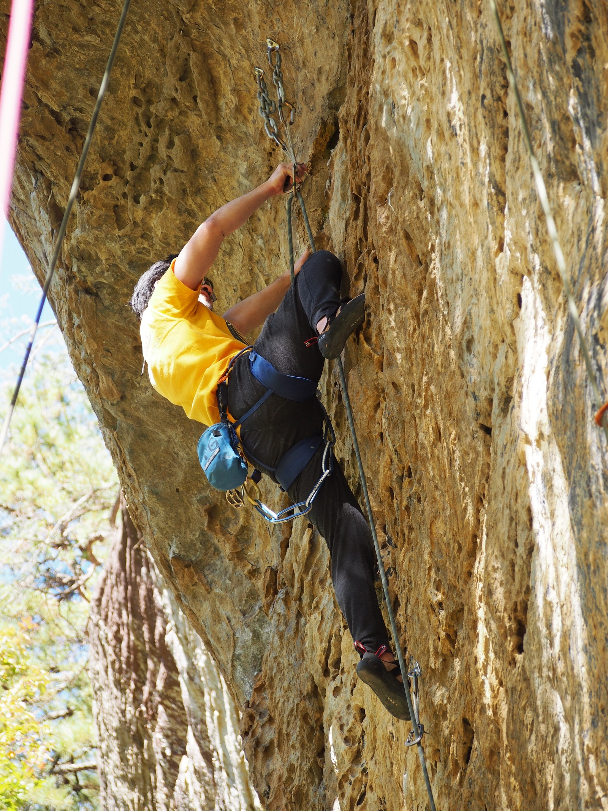

Department of Biomolecular Engineering
University of California, Santa Cruz
jon[dot]akutagawa[at]ucsc[dot]edu
Southern California is my home, but somehow I ended up getting stuck in the northern part of the state.
I studied bioengineering at the University of California, Berkeley.
I worked at an immunotherapy startup immediately after graduation, focusing on improving downstream process development protocols.
UCSF was the next stop; there I studied the signaling networks of pediatric leukemias before returning to academia.
Not-so-academic interests
I enjoy a lot of sports, but it's getting harder and harder to follow all my teams.
I support the Los Angeles Lakers, California Golden Bears, San Francisco 49ers, Los Angeles Dodgers, Los Angeles Kings, Los Angeles Galaxy, and Arsenal Football Club.
Before graduate school, I spent a fair amount of time climbing outdoors.
These days, I am mostly scaling plastic holds.
Shoutout to my old gym, which will always be known as Planet Granite.

Fig. 1 - Cleaning up at Fortress Wall, Red River Gorge, Kentucky.
Board games are fun, particularly long strategic ones. I rarely have time to play them, but my current choice is
Caverna. It's a farming simulation game starring cave dwarves.
I am also looking for a copy of Acquire, a much better hotel tycoon game than Monopoly (which is still quite entertaining).
Emilia's makes the best pizza in the Bay Area.
Golden Boy is pretty great too. Bantam and Mentone are my two favorite Santa Cruz
spots (albeit a bit pricey).